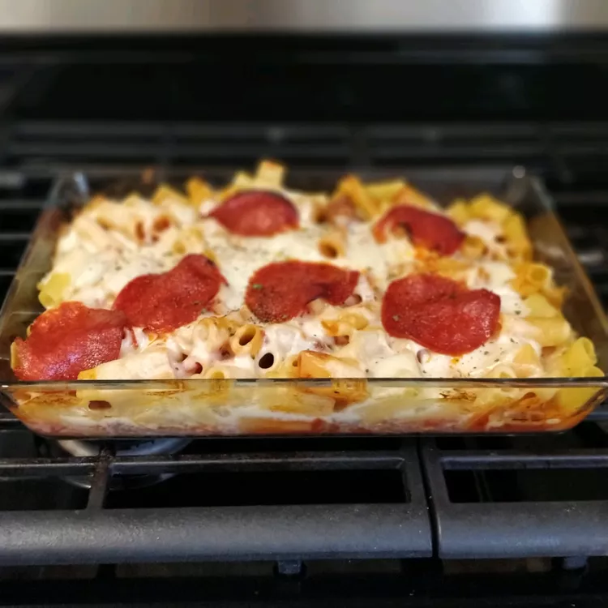

Manicotti Casserole

Want something like a lasagna, but don't want to spend hours in the kitchen? Here you go: the perfect meet-in-the-middle!
Ingredients:
- 1 pound rigatoni pasta
- 1 pound ground beef
- 1 pound Italian sausage
- 1 (8 ounce) can mushrooms, drained
- 2 (32 ounce) jars spaghetti sauce
- 1 ½ pounds shredded mozzarella cheese
- thinly sliced pepperoni
Steps:
- Step 1: Preheat oven to 350 degrees F (175 degrees C).
- Step 2: Bring a large pot of lightly salted water to boil. Pour in rigatoni, and cook until al dente, about 8 to 10 minutes. Drain, and set pasta aside.
- Step 3: Meanwhile, brown ground beef and italian sausage in a large skillet over medium heat. With a slotted spoon, remove beef and sausage to a baking dish. Stir mushrooms, spaghetti sauce, and cooked pasta into the baking dish. Sprinkle cheese and pepperoni over the top.
- Step 4: Bake in preheated oven until the cheese is brown and bubbly, about 20 minutes.